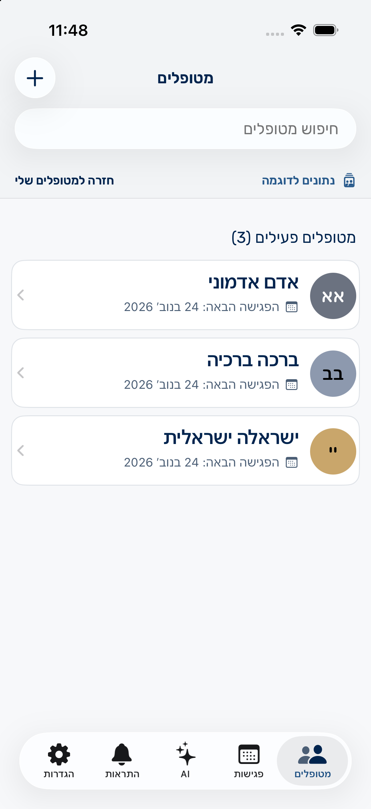
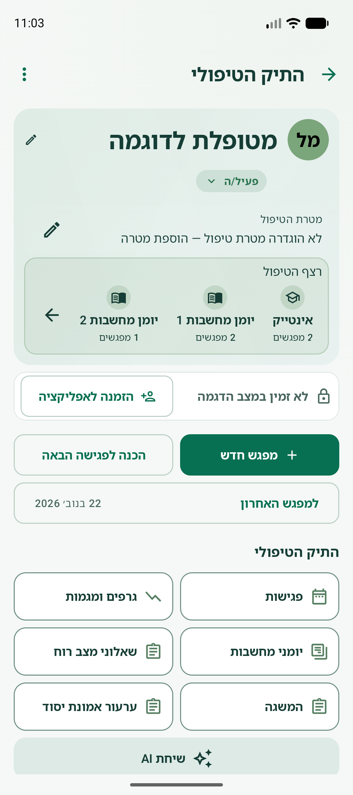
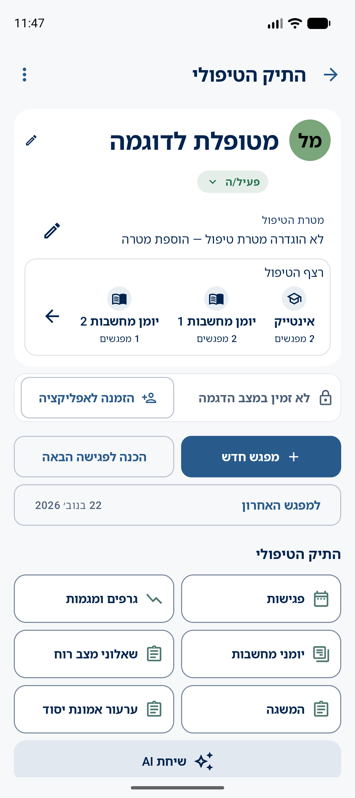
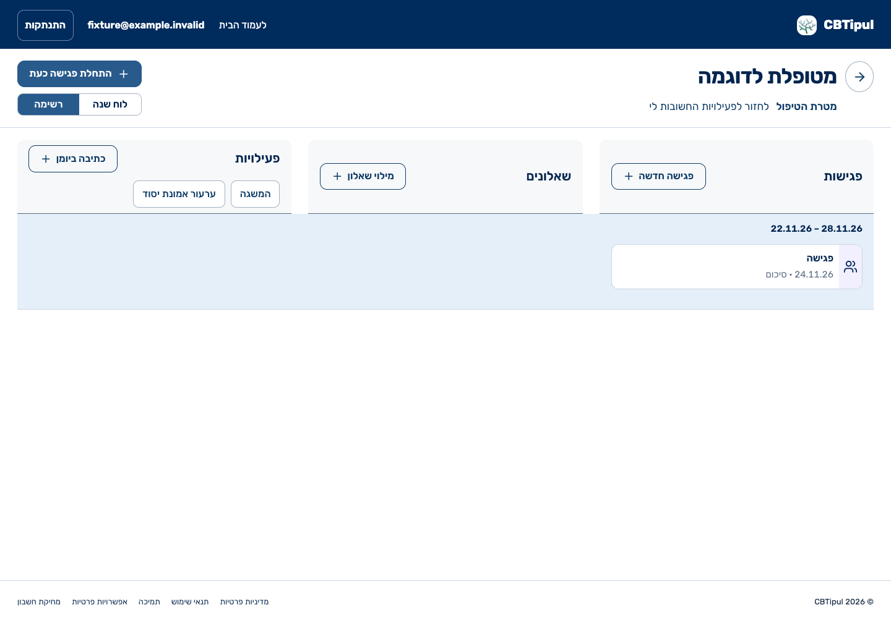
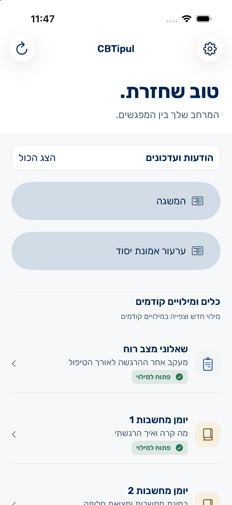
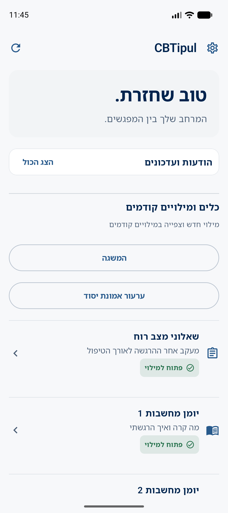
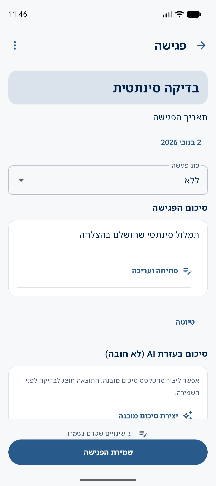
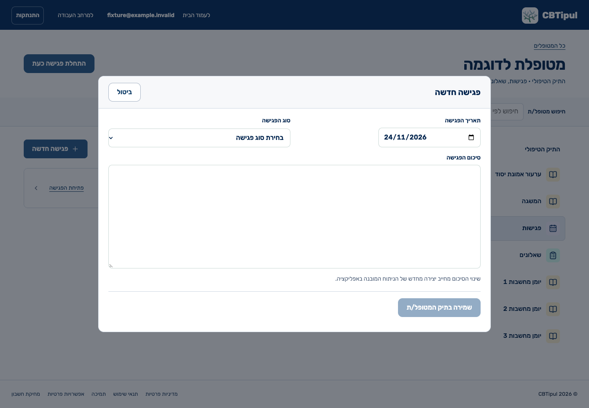
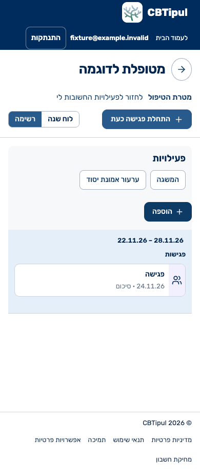

Real app renders with synthetic data. Mobile before images are from the preceding botanical review. Web captures show the updated desktop and narrow layouts. Layout and RTL are unchanged.








